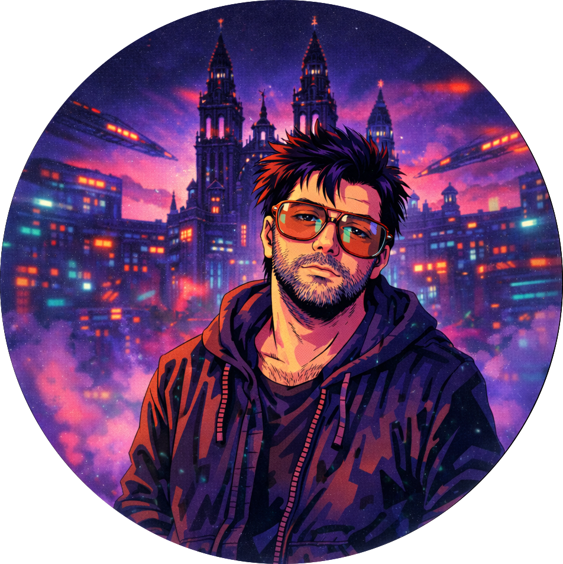

Hola!
Soy desarrollador de software junior afincado en Santiago de Compostela. Me gusta el desarrollo de producto, y me entretengo creando soluciones de software. También me encantan los videojuegos, la tecnología y el futuro con un toque de nostalgia retro.
Dime hola!Sobre mí
Desarrollador de software junior, actualmente en búsqueda activa de mi primer empleo como desarrollador. Apasionado por el desarrollo de producto y por construir soluciones desde cero. Estudiante de DAM con nota media de sobresaliente y experiencia reciente en entorno industrial real.
Lenguajes
Tecnologías
Herramientas
En mi tiempo libre, soy un buen friki que disfruta trasteando con tecnología, perdiendo horas en videojuegos, leyendo fantasía y ciencia ficción, admirando el trabajo de gente como Matt Reeves y montando Legos. La nostalgia retro manda.

Experiencia
Entorno industrial real. Migración de sistemas legacy y desarrollo de herramientas internas.
Soporte técnico de primer y segundo nivel. Cliente principal: Vodafone.
Accede a mis repositorios
App Android publicada en Google Play Store. Desarrollo completo del cliente Android, backend propio con PHP, API REST y MySQL. Diseño, implementación y despliegue realizados de forma autónoma.
Los ejercicios y prácticas más estimulantes del curso 2024/2025. Lógica, POO, backend y frontend — los retos favoritos en código.
Nuevo proyecto en desarrollo.
Fricadas